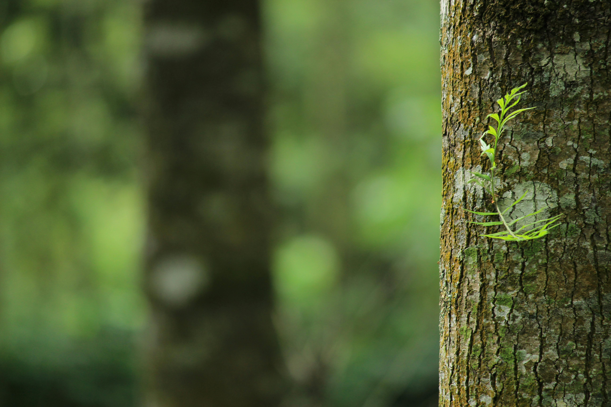

Title: Enhancing Your Landscape: A Comprehensive Guide
Introduction:
In the realm of landscaping, trees play a pivotal role, offering aesthetic appeal, environmental benefits, and structural integrity to outdoor spaces. However, maintaining trees requires specialized knowledge and skills to ensure their health, safety, and beauty. Tree services encompass a wide array of practices aimed at caring for trees, from planting and pruning to disease management and removal. This comprehensive guide delves into the diverse aspects, providing insights into their importance, methods, and benefits.
1. The Importance:
- Environmental Benefits: Trees contribute significantly to environmental health by purifying the air, conserving energy, and mitigating climate change through carbon sequestration.
- Aesthetic Appeal: Well-maintained trees enhance the visual appeal of landscapes, adding charm, character, and shade to outdoor spaces.
- Property Value: Proper tree care can increase property value by improving curb appeal and creating a welcoming atmosphere.
- Safety and Liability: Regular tree maintenance helps prevent hazards such as falling branches or uprooting, reducing the risk of property damage and personal injury.
2. Tree Services Overview:
- Tree Planting: Choosing the right species, location, and planting techniques are crucial for tree establishment and long-term health.
- Pruning and Trimming: Trimming promotes healthy growth, improves structure, and enhances aesthetics while removing dead or hazardous branches.
- Tree Removal: Safely removing trees that are diseased, damaged, or posing risks requires professional expertise and equipment.
- Stump Grinding: Grinding stumps post-removal prevents regrowth, eliminates tripping hazards, and allows for seamless landscape integration.
- Emergency Tree Care: Responding promptly to storm damage or tree emergencies can prevent further property damage and ensure safety.
3. Tree Health and Maintenance:
- Disease Diagnosis and Management: Identifying and treating tree diseases early on can prevent widespread infestation and preserve tree vitality.
- Insect Control: Implementing integrated pest management strategies helps protect trees from harmful insects while minimizing environmental impact.
- Fertilization and Soil Management: Providing proper nutrients and soil conditions enhances tree vigor and resilience to stressors.
- Mulching: Mulch conserves soil moisture, regulates temperature, suppresses weeds, and improves soil structure around trees.
- Irrigation: Proper watering techniques tailored to tree species and environmental conditions are essential for maintaining optimal moisture levels.
4. Professional Tree Care Services:
- Certified Arborists: Hiring certified arborists ensures expertise in tree care practices, adherence to safety standards, and ethical stewardship of trees.
- Equipment and Techniques: Utilizing advanced equipment and industry-best practices, professionals deliver efficient and effective tree care services.
- Legal Compliance: Knowledge of local regulations and permits is crucial for conducting tree work in compliance with municipal ordinances and environmental laws.
- Insurance and Liability: Reputable tree service companies carry insurance coverage to protect clients and workers against potential accidents or property damage.
5. Benefits of Professional Tree Services:
- Expertise and Experience: Trained professionals possess the knowledge, skills, and experience to assess, diagnose, and address various tree care needs.
- Time and Cost Savings: Outsourcing tree care tasks to professionals saves time, minimizes risks, and reduces long-term maintenance costs.
- Safety Assurance: Professional tree service providers prioritize safety protocols, minimizing risks to property, people, and surrounding vegetation.
- Long-Term Tree Health: Regular maintenance by professionals promotes tree longevity, resilience, and overall health, ensuring continued enjoyment of landscape assets.
Conclusion:
Tree services are integral to preserving the beauty, health, and safety of landscapes while maximizing the benefits of trees. Whether it's routine maintenance, emergency care, or specialized treatments, entrusting tree care to qualified professionals ensures optimal results and peace of mind. By investing in comprehensive tree services, property owners can enhance their outdoor environments, promote environmental sustainability, and safeguard their valuable assets for generations to come.
Tree removal is a necessary service in landscaping and arboriculture, typically undertaken when a tree poses risks to property, safety, or health. This process involves safely and efficiently removing trees that are dead, diseased, structurally compromised, or unwanted in a particular landscape.Certified arborists or tree care professionals evaluate the tree's condition, considering factors such as stability, disease presence, proximity to structures, and overall health. Once the decision is made to remove the tree, careful planning and execution are essential to ensure safety and minimize potential damage to surrounding property and vegetation.
Tree maintenance is essential for the health, safety, and aesthetics of landscapes. It encompasses various practices aimed at preserving the vitality and structural integrity of trees. Pruning and trimming are fundamental aspects of tree maintenance, promoting healthy growth, improving aesthetics, and reducing the risk of limb failure. Regular pruning removes dead or diseased branches, enhances air circulation, and shapes trees for optimal structure and form.Additionally, proper watering and soil management are critical for maintaining tree health. Adequate irrigation ensures that trees receive sufficient moisture, particularly during dry periods, while well-balanced soil provides essential nutrients and supports root development.
Tree Trimming
Tree trimming, also known as pruning, is a vital aspect of tree care aimed at maintaining tree health, safety, and aesthetics. It involves selectively removing branches to promote proper growth, improve structure, and enhance the overall appearance of trees.
Proper tree trimming begins with a thorough assessment of the tree's condition and specific trimming objectives. Certified arborists or trained professionals consider factors such as tree species, growth patterns, desired shape, and potential hazards before determining the appropriate trimming techniques.
Click Here for prices
Stump removal is a crucial aspect of tree care and landscaping, aimed at eliminating the remnants of felled trees to enhance the aesthetics, safety, and functionality of outdoor spaces. This process involves grinding down the remaining stump and roots below the ground level, effectively eradicating any potential hazards and allowing for seamless integration of the area into the landscape. Stump removal not only eliminates unsightly protrusions but also prevents regrowth, minimizing the risk of tripping hazards and facilitating the utilization of the space for various landscaping purposes.
Stump grinding is a crucial aspect of tree maintenance and landscape management, aimed at removing tree stumps left behind after tree removal. This process involves using specialized equipment to grind the stump and its root system into small wood chips, effectively eliminating the visible remains and allowing for seamless integration of the area into the landscape.
One of the primary benefits of stump grinding is the prevention of regrowth, as stumps left untreated can sprout new shoots, leading to undesirable growth and potential hazards.
Absolutely outstanding service from start to finish! The team was professional, efficient, and extremely knowledgeable. They handled our tree pruning with precision and care, leaving our property looking better than ever. Highly recommend their tree services!
We had a tree emergency during a recent storm, and this company came to our rescue promptly. Their quick response and expert tree removal saved us from further damage. Great communication, fair pricing, and top-notch service. Couldn't ask for more!
I've used several tree service companies in the past, but none compare to the level of expertise and professionalism exhibited by this team. From diagnosis to treatment, they provided thorough and effective care for my diseased trees. Highly impressed!
- Crystal Moreno
Overall, I highly recommend this tree services company to anyone in need of professional tree care. Their expertise, commitment to safety, and exceptional quality of work make them stand out in the industry. I will definitely be using their services again in the future.
- Aasiyah Robinson
I recently hired a tree services company to take care of some issues with the trees on my property, and I couldn't be happier with the results. From start to finish, their professionalism and expertise were evident.